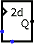

Random
Random
| Library: | Memory |
| Introduced: | 2.3.0 |
| Appearance: |
 |
Behavior
This component iterates through a pseudorandom sequence of numbers. It steps forward to the following number in the sequence each time the clock is triggered while the component is enabled. The sequence is generated by the xoshiro256++ algorithm, which has a 256-bit internal state and produces a 64-bit result at every step.
All 64 result bits are pseudorandom. If the Data Bits attribute is smaller than 64, the component outputs the configured number of low-order bits.
Besides the clock input, the component also includes an enable input, which leads the clock input to be ignored when enable is 0, and a reset input, which restores the initial state of the sequence.
The user-configurable seed is expanded into the four 64-bit state words using SplitMix64. If the seed is 0 (the default), simulation chooses a seed based on the current time; a new time-based seed is chosen when the reset input rises. Generated HDL cannot obtain the host's current time and therefore uses a fixed fallback for seed 0. Configure a nonzero seed when simulation and generated HDL must produce the same sequence.
Pins
- East edge, labeled Q (output, bit width matches Data Bits attribute)
- Outputs the value currently stored by the component.
- West edge, top pin, labeled with a triangle (input, bit width 1)
- Clock: At the instant that this is triggered as specified by the Trigger attribute, the component steps to the following number in its sequence.
- West edge, bottom pin (input, bit width 1)
- Enable: The component is enabled when this input is disconnected or 1; but if it is 0, then the clock input is ignored.
- South edge (input, bit width 1)
- Reset: When this is 1, the pseudorandom sequence returns to its initial state. If seed is 0, a new time-based state is selected when this input rises during simulation.
Attributes
When the component is selected or being added, Alt-0 through Alt-9 alter its Data Bits
attribute.
- Data Bits
- The bit width of the value emitted by the component.
- Seed
- The starting value used for the pseudorandom sequence. If this is 0 (the default), then the starting value is based on the time that the random sequence began.
- Trigger
-
Configures how the clock input is interpreted. The value
rising edge
indicates that the component should update its value at the instant when the clock rises from 0 to 1. Thefalling edge
value indicates that it should update at the instant the clock falls from 1 to 0. - Label
- The text within the label associated with the component.
- Label Font
- The font with which to render the label.
Poke Tool Behavior
None.
Text Tool Behavior
Allows the label associated with the component to be edited.